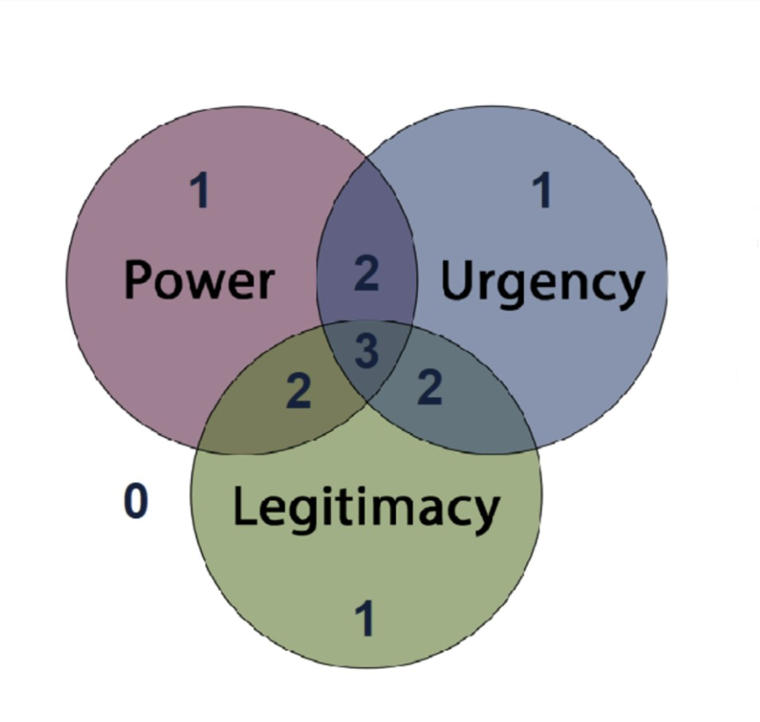
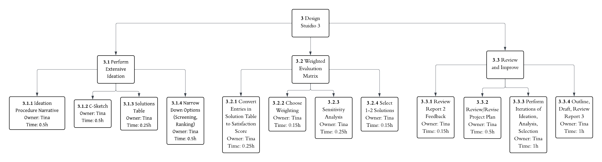
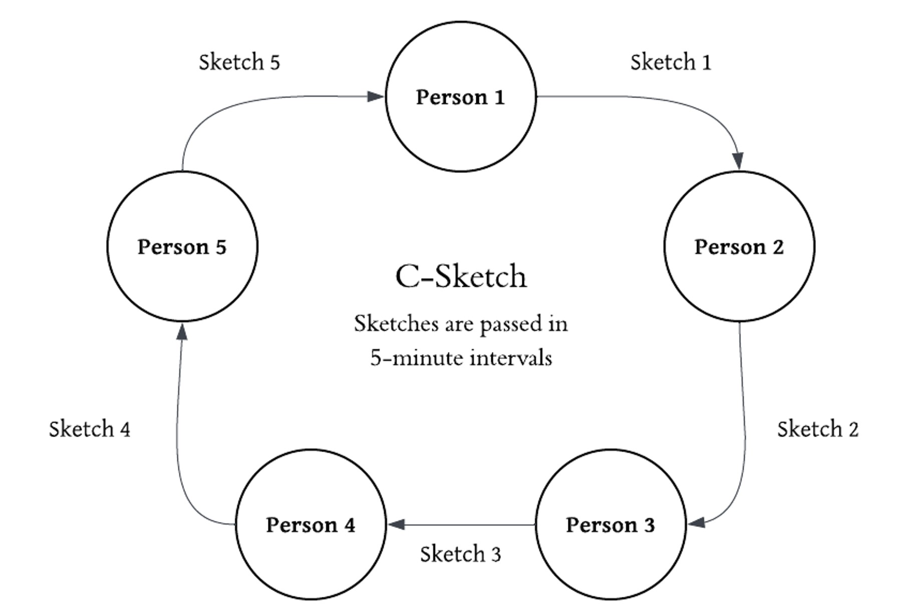
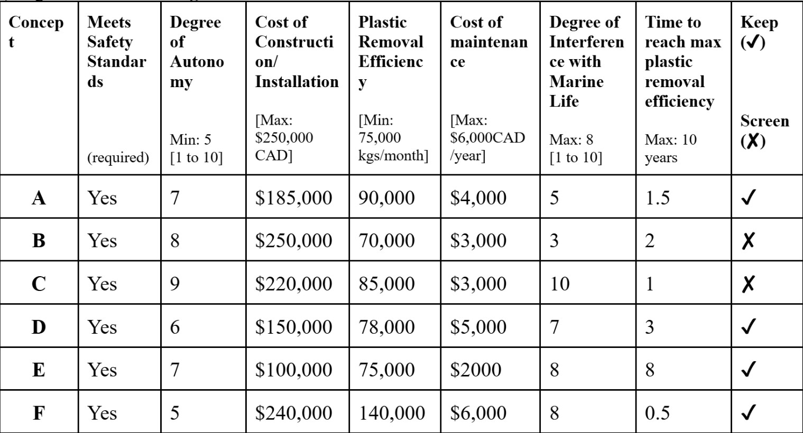

Our team of five was tasked with addressing a significant modern problem with critical societal and ecological importance and designing a solution for its integration.
We chose to focus on the pervasive issue of microplastic pollution in the Great Lakes, which poses severe threats to aquatic ecosystems and human health.
This problem is defined by its sheer scale: Every year, 10–40 million metric tons of plastic enter the natural environment. These plastics eventually degrade into microplastics from sources like tires, cosmetics, and the breakdown of larger litter. Once created, these particles are permanently embedded in every facet of the ecosystem, from the air we breathe to the soil and water, including critical freshwater systems like the Great Lakes and St. Lawrence River.
Our goal was to design a conceptual solution and a plan for integration to reduce microplastic pollution entering the Great Lakes.
To maximize the chance of success, our team navigated a structured process that led us to the conceptual implementation of our solution.

Figure 1: Overview of the structured engineering design process used throughout the project
The complexity of the microplastics problem demanded a strong, coordinated team and a robust foundational understanding. Our first lab focused on establishing internal structure and deep-diving into the problem's mechanics.
| What We Did | Why it’s Important |
|---|---|
| Established a team contract outlining roles (e.g. deliverable lead, meeting minutes taker...) | Immediately established individual ownership and a framework for efficient, distributed labor |
| Conducted in-depth research into origins and current mitigation techniques related to microplastic pollution in freshwater systems | Built a foundational understanding of the microplastic problem |
The second phase was critical for translating our broad objective into quantifiable engineering requirements and developing a robust project plan. This established the non-negotiable boundaries for our solution.
We began by identifying key stakeholders and their needs to ensure our solution was ecologically and socially viable. This process used the Saliency Model (Power, Urgency, Legitimacy) to prioritize concerns.
Figure 2: Stakeholder saliency model showing power, urgency, and legitimacy dimensions for key stakeholders
The Saliency Model ensured that the final design addressed the most critical concerns from powerful, legitimate, and urgent stakeholder groups, such as lakeside homeowners and local government agencies.
For instance, the University of British Columbia would have a saliency dimenion of 2, as they have power and legitimacy. We, as students, have a responsibility to maintain their global reputaiton while ensuring safety.
A lakeside homeowner in the Great Lakes would have a saliency dimension of 3, with power, legitimacy, and urgency. We must ensure their current way of living remains undisrupted, as they hold a right to their land.
We analyzed 10 different stakeholders, and this drove the core design requirements:
To manage the project, we simultaneously created a project plan and analyzed existing solutions.
We first created a Graphical Work Breakdown Structure (WBS) and Network Flow Diagrams to systematically map out project tasks for the future.
Figure 3: Work Breakdown Structure (WBS) organizing project tasks hierarchically

Figure 4: Network Flow Diagram showing task dependencies and critical paths
Additionally, we brainstormed existing microplastic removal methods (e.g. membrane filtration, magnetic separation) to inform our design. This analysis led us tot he concept of the Autonomous Fleet System.
This would include a fleet of autonomous robots operating offshore to collect/filter microplastics. They would use AI/data to predict and target areas of dense plastic buildup and periodically return to a solar-powered platform for plastic removal.
We wanted to focus on deep-water extraction with minimal impact on wildlife, hence its slow movement and avoidance of sensitive zones.
This session marked the transition from problem constraints to the conceptual design phase. We employed structured ideation techniques, followed by rigorous quantitiative analysis to narrow does a field of 20 potential solutions to the most viable design for prototyping.
We used two core concept generation techniques to ensure every team member contributed equally and ideas were fully developed before selection.
First, we used C-sketch, where team members simultaneously and iteratively sketched ideas, obligating a visual contributed from everyone. Then, we used the Gallery Method, where individuals generated ideas by themselves, followed by a group critique and refinement process.
Figure 5: C-Sketch ideation process enabling collaborative concept generation

Figure 6: Gallery Method for individual ideation followed by group critique and refinement
As a result of this structured brainstorming, we generated 20 distinct potential solutions, ranging from filtration devices on ship hulls to the biological deployment of microplastic-consuming fungus species.
These 20 ideas were distilled into six novel, high-potential solutions (A-F) including:
A: Sea roombas-like autonomous surface vehicles with filtration
D: Autonomous submersibles with vacuum systems
F: Ship-mounted filtration systems for large-sclae, mobile pollution management
We first screened the six solutions, with reference to the design specifications. All six of them passed the screening test:
Figure 7: Initial screening table evaluating six potential solutions against design specifications
Then, to objectively select the final solution, we employed a multi-stage ranking process that moved from subjective preference to quantitative evaluation.
First, we used individual voting to gauge personal team biases and preferences. With this ranking method, concepts A, E, and F were favored.
Next, we use pairwise comparison as a simple relative scoring system against criteria.
Lastly, we conducted criterion-based ranking, where we compared each concept against the average performance for every specific evaluation criteria. Concepts A and F advanced.
The final selection was determined by the Weighted Evaluation Matrix, where criteria (e.g., Microplastics Removed, Installation Cost) were weighted according to their importance derived from our Design Lab 2 stakeholder analysis. The Weighted Matrix, shown below, provided an objective basis for selection.

Figure 8: Weighted Decision Matrix providing objective quantitative comparison of final concepts
Then we conduced Sensitivity Analyses, which reinforced the decision by showing that Concepts A, E, and F remained the strongest performers even when criteria weights were slightly adjusted, proving their overall robustness.
Based on the combined quantitative data from the matrices, Concepts A, E, and F produced the largest summative scores across both the original and revised weightings.
Even though we had initially preferred an autonomous fleet of robots, concept F became the optimal solution for maximizing plastic removal, as it scored the highest total in the weighted decision matrix.
This final lab stage involved deep-diving into the feasibility and risks of the top three concepts (A, E, F) and then rigorously testing the riskiest assumptions of the chosen solution.
We analyzed the riskiest assumptions for each leading concept to justify the final selection:
| Concept | Description Summary | Riskiest Assumption | Final Rationale |
|---|---|---|---|
| A: Sea Roombas | Autonomous, car-sized, solar/electric hybrid robots using magnetic and mesh filtration. | Battery Management System Failure combined with volatile lake conditions leading to loss of the device and long-term unreliability. | Too hazardous and unreliable for long-term deployment; high maintenance/replacement costs. |
| E: Bioremediation | Cultivating algae/fungus beds to capture and digest microplastics in a controlled environment. | Unforeseen Biological Evolution/Invasiveness. Introducing a new species risks altering the natural ecosystem in unpredictable, potentially catastrophic ways. | Risk of ecological disaster is too great to ignore, despite low operating cost. |
| F: Ship-Attached Filtration | Large, modular filter system attached to the underside of commercial ships, utilizing magnetic and membrane filtration. | System Detachment/Membrane Failure and adverse impact on the ship's hydrodynamics (drag, fuel efficiency). | Selected Solution. The risks are Technical and Preventable, manageable through engineering and materials science, unlike the Strategic/External risks of A and E. |
Based on the quantitative analysis and qualitative risk assessment, Concept F was selected as the most feasible and reliable long-term solution.
The final design is a pair of modular filtration units easily attached to the hull of commercial ships, capitalizing on existing marine traffic for mass pollution removal.
Key design features include a renewable algae filter to capture microplastics. In addition, internal iron oxide nanoparticles will be released, attaching themselves to trapped microplastics. An electromagnet, powered by a small internal battery and rail system, periodically passes behind the filter to collect the microplastic/iron oxide mass and transfers it to a 500L holding tank. The device will be made out of high-quality, marine-grade 5083 aluminum for anti-corrosion, high strength, and light weight. Maintenance will be in 6-month cycles, and it is designed for easy removal and installation on land.
We focused prototyping on the two greatest technical risks identified in Concept F: hydrodynamic drag and membrane strength.
To counter ship operator reluctance due to fuel efficiency concerns, we conducted a low-fidelity, iterative virtual prototype (on paper/CAD concept) focused on optimizing the filter's shape.
| Design Iteration | Inspiration / Change | Improvement (Takeaway) |
|---|---|---|
| Change 1 | Inspired by Whale Sharks and Jet Engines. Tapered cylinder shape. | Allowed water to smoothly warp around the filter, minimizing large-scale turbulence. |
| Change 2 | Addition of a sharp cone in front of the intake. | Reduced blockages (reducing maintenance) and improved aerodynamics by providing a smoother front surface. |
| Change 3 | Application of Riblets (microscopic divots). | Achieved an estimated 11% reduction in drag by preventing the formation of strong, drag-inducing vortices (similar to dimples on a golf ball). |
| Change 4 (Final) | Redesigned intake (oval shape) inspired by the Manta Ray mouth. Aluminum shell. | Preserved hydrodynamics while maximizing intake area and using natural fluid mechanics to improve internal flow and collection efficiency. |
Force Calculation: Assuming a maximum ship speed of 40 kph, the actual forc eon a full-scale filter was calculated using the equation for force (F=pAv^2), resulting in a froce of 4.44e4 N.
Scaled Testing: We calculated the necessary parameters to produce a scaled force of 4.4 N on a small test membrane (0.02 x 0.02 m)
Results: The test proved that the algae membrane can indefinitely withstand the forces exerted by a ship moving under 40 kph, mitigating the risk of tearing.
We designed a modular Anchor System using four cables and winches bolted to the ship's deck. This system allows the filter body to slide onto the hull like a glove before being tensioned.
Takeaway: This system makes the design interchangeable across different ship hulls (fiberglass, metal) and eliminates the need for expensive underwater divers or drydocking during installation and maintenance, directly addressing cost and complexity concerns.
Our final step was classifying the remaining risks of Concept F. The Risk Categorization Table and Risk Matrix showed that the most critical, high-likelihood/high-impact risks were generally Preventable or Technical in nature, reinforcing the decision to select Concept F.

Figure 9: Risk matrix categorizing remaining risks by likelihood and impact severity
The most concerning risks, as demonstrated by the risk matrix table, are the possibility that water intake sucks in aquatic life, operator misuse, and chemical reactions/material degradation. Thus, for these risks, risk management strategies were created:
| Critical Risk | Mitigation Strategy |
|---|---|
| Water intake ingesting aquatic life | Installation of small grates and reducing intake velocity to allow aquatic life to escape the current. |
| Operator misuse or improper maintenance | Implementing an in-depth formal training program and using senior employee supervision. |
| Material degradation/chemical reactions | Using anti-reactive materials (5083 Aluminum) and installing a monitoring/alarm system to alert workers to potential deterioration. |
The entirety of the project, from the initial deep dive into microplastic pervasiveness to the final, quantitative risk assessment, culminated in the selection and robust refinement of Concept F. Our final design is a modular, maintainable, and low-drag ship-attached filtration system ready for regulatory compliance and industrial adoption, offering a feasible path to significantly reduce microplastic pollution in the Great Lakes.
Our comprehensive plan outlines the path from final design validation to the deployment of the first batch of 25 filtration systems on active vessels within two years (by May 2027).
The project is structured around key phases, with a minimum deployment time of 1 year and 7 months. The critical path length is 10 months. A Gantt chart was created to organize the timeline into a visual format:

Figure 10: Gantt chart visualizing project phases and critical path over 19 months
Our operational plan uses a specialized team structure to maximize efficiency across technical, regulatory, and public fronts.
| Team | Specialists & Roles | Primary Deliverable |
|---|---|---|
| Research | Mechanical & Marine Engineers, Interns | Final CAD models, hydrodynamic simulations, and full-scale physical prototypes used in ship trials. |
| Assembly | Marine Technicians, Engineering Interns | Mass production of 25+ units, training of ship crews, and physical installation of the systems. |
| Marketing | Development Director, Public Affairs Expert | Secure investor funding, organize public showcases, and lobby government bodies for incentive programs. |
| Oversight | Project Manager, Environmental Compliance Specialist | Oversee timeline, manage deliverables, secure regulatory approvals, and ensure design compatibility. |
A sustainability assessment was performed on the three major material components of the filtration system using a Life-Cycle Thinking approach to minimize both eco-costs and carbon footprint.
We used the IDEMAT tool to compare materials under scenarios (e.g., Closed-Loop Recycling) relevant to their component life cycles.
| Component | Material Selected | Rationale |
|---|---|---|
| Filtration Casing | Marine-Grade 5083 Aluminium | Lowest eco-costs (€0.14) and significantly lowest carbon footprint (0.75 kg CO2) compared to titanium (17.56 kg CO2) and stainless steel. |
| Ship Attachment Points | Steel (Primary) | Lowest eco-costs (€0.13) and lowest carbon footprint (0.68 kg CO2)under the long-life "Closed Loop Recycling" scenario. |
| Supporting Netting | Polypropylene (PP) | Lowest carbon footprint (1.36 kg CO2). Chosen over Polyester (lower eco-cost) due to the substantial difference in environmental impact (approximately 2 kg CO2 less per kg). |
The final design commits to the most sustainable material solution for each component, ensuring long-term environmental and economic viability.
The journey of this design project began with confronting a massive, persistent environmental challenge: microplastic pollution pervading the Great Lakes ecosystem. Our team successfully navigated a rigorous, four-stage design process to transform this broad problem into a viable and implementable engineering solution.
This design project successfully addressed the pervasive ecological threat of microplastic pollution in the Great Lakes by following a rigorous, data-driven engineering process. Our journey began with a deep system analysis, which justified the shift from generic ideation to the focused development of Concept F: a modular, low-drag filtration system attached to existing commercial ships. The project's most critical challenge, validating the design's feasibility, was met through iterative prototyping, where scaled physical testing confirmed the durability of the algae membrane against water pressure, and virtual prototyping drastically reduced drag through bio-inspired design (riblets and the Manta Ray intake). The final selection was reinforced by a Risk Assessment and Life-Cycle Analysis, which confirmed Concept F's superior technical reliability and sustainable material choices (Marine-Grade Aluminum, Polypropylene). Ultimately, this project demonstrates the integration of the engineering design process as well as the and socio-ecological responsibility to deliver a solution that is not only effective but also viable for real-world adoption.
Throughout this course, I gained a much deeper understanding of the Engineering Design Process. I believe that the purpose of this project was not to memorize the exact details of the design process — it is meant to build a foundation of “common sense” for how a complex project should come into fruition. The design process isn’t meant to be memorized. Instead, it exists to guide engineers toward clear, well-reasoned decisions while reducing risk. Each stage, from brainstorming to prototyping to evaluation, forced me to slow down, think critically, and justify why a solution made sense before moving forward.
One of the most important realizations I had was that engineering is fundamentally collaborative. Early in the term, our team struggled because our individual strengths were dramatically different. Some members were strong at generating ideas but struggled with writing. Others, including myself, were better at organizing information and communicating clearly through written and verbal communication. Once we learned to match tasks to strengths, after Session 2, the quality of our work and our efficiency improved significantly. For instance, it would be more effective for the strongest visualizer to complete one portion that required diagramming (such as creating network flow diagrams) rather than assigning one network flow diagram to each member, while others may work on other sections they are more comfortable with. From this, I learned that adaptability and communication within a team are core attributes of an engineer.
This project also shifted my understanding of what engineers owe to society. In Lab 4 especially, I realized how dangerous flawed assumptions or tunnel vision can be. I was initially fixated on an autonomous robot concept, but once I began prototyping, I saw its feasibility collapse under practical constraints and risks. That experience reminded me that engineers must be responsible, evidence-driven, and willing to abandon ideas when they pose risks or lack practicality.
Through this course, I discovered that my strengths lie in conceptual thinking and adaptability. However, I also recognized that I need to grow my hands-on skills and confidence in implementation. I plan to continue improving by intentionally taking on prototyping-heavy roles in future projects, forcing myself to practice translating ideas into reality.